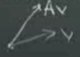
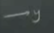
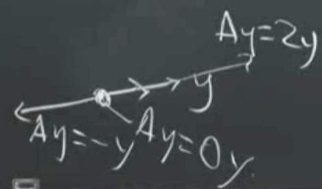
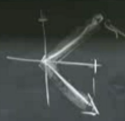

Ders 1.5
Önceki derste $-u" = \delta(x-a)$ denklemini çözmüştük. Ayrıksal olarak bu denklem sol tarafta matris $-K$, sağ tarafta ise noktasal ağırlığı tek hücre içinde 1 olan bir vektöre tekabül edecektir. K bağlamında 1 -2 1 formu, -1 2 -1 haline gelir, $u$ vektörü önceki gibi, sağ tarafta ise ayrıksal delta fonksiyonu. Ağırlığın 2. hücrede olduğu örnek alttadır.
$$
\left[\begin{array}{rrrr}
2 & -1 & 0 & 0 \\
-1 & 2 & -1 & 0 \\
0 & -1 & 2 & -1 \\
0 & 0 & -1 & 2
\end{array}\right]
\left[\begin{array}{c}
u_1 \\
u_2 \\
u_3 \\
u_4
\end{array}\right]
=
\left[\begin{array}{c}
0 \\
1 \\
0 \\
0
\end{array}\right]
$$
Ortaya ilginç bir durum çıktı: sağ taraftaki matrise bakarsak, ağırlık 2. hücrede ve orası 1. Eğer 3. olsaydı 3. hücre 1 olurdu, vs. Tüm bu vektörleri yanyana koysak, birim matrisini elde etmez miyiz? Evet. O zaman bir kolaylık ortaya çıktı. Ağırlık $j$ üzerinde ise o vektörü $\delta_j$ ile temsil edersek,
$$ Ku = \delta_j $$
$\delta_j$ yerine $I$ kullanırsak, ve $u$ vektörü yerine $U$ kullanırsak,
$$ KK^{-1}U = I \cdot K^{-1}$$
$$ U = K^{-1} $$
olacaktır. $U$ içinde her türlü $j$ olasılığı için bir çözüm içeriyor. Eğer $j=2$ olasılığının çözümünü görmek istiyorsak o zaman $K^{-1}$ matrisinin yani $U$'nun 2. kolonuna bakmak yeterli.
Peki, eğer yük tek bir nokta yerine "tüm" noktalarda olsaydı ne yapardık? Tüm noktalardaki yük eşitliğin sağ tarafının tamamen 1 olması demektir. O zaman bir başka numara yaparak, tamamen 1 içeren bu vektörü ayrı ayrı $\delta_j$'ler "toplamı" olarak görebiliriz, mesela
$$ \left[\begin{array}{c} 1 \\ 0 \\ 0 \\ 0 \end{array} \right] + \left[\begin{array}{c} 0 \\ 1 \\ 0 \\ 0 \end{array} \right] + \left[\begin{array}{c} 0 \\ 0 \\ 1 \\ 0 \end{array} \right] + \left[\begin{array}{c} 0 \\ 0 \\ 0 \\ 1 \end{array} \right] = \left[\begin{array}{c} 1 \\ 1 \\ 1 \\ 1 \end{array} \right] $$
Bu ne demektir? Eşitliğin sağ tarafının "girdi" olarak görülebildiğini de biliyoruz. Lineer bir sistemde girdiler toplanırsa, mümkün tüm çıktılar da toplanır. Üstteki $K^{-1}$'in kolonları da bu mümkün tüm çıktıları zaten verdiğine göre tek yapmamız gereken bu kolonları birbiriyle toplamaktır.
Green'in Fonksiyonu
$-u"$'ya eşit olarak bir noktasal ağırlık (point load) yani delta fonksiyonu varsa çıkan sonuç Green'in fonksiyonu olarak bilinir ve bu fonksiyon $G(x,a)$ olarak ta gösterilebilir, çünkü Green'in fonksiyonu hem $x$'e hem $a$'ya bağlıdır. Ayrıksal, sürekli (continuous) bağlamında ise Green'in fonksiyonu üstte gösterilen matris tersi işleminin sürekli hali olarak düşünülebilir.
Özdeğerler ve Özvektörler (Eigenvalues and Eigenvectors)
Özdeğerler $Ay = \lambda y$ formunda ortaya çıkarlar. Eğer bir problemde bu formu bulabilirsek, çözüm için müthiş kolaylık sağlayan bir kavramdırlar. Özdeğerler $\lambda$ içinde, özvektörler $y$ içinde bulunur.
Bu kavram hakkında anlayış geliştirelim. Mesela elimizde bir $v$ vektörü var, ve $A$ matrisi ile çarpılıyor. Sonuç yine bir vektör olacak, bu vektör $Av$ vektörü.

Eğer o vektör yukarıdaki gibiyse, $v$ bir özvektör değil demektir. Niye? Çünkü özvektörler özel vektörlerdir (her $A$ için) , öyle değerlere sahiptirler ki $A$ ile çarpılınca, çizgisel yönleri değişmez (ama boyları değişebilir). Diyelim ki elimizde bir $y$ var,

$Ay$ alttaki gibi olabilir

$2y$ olabilir, ters yönde büyüyebilir, sıfır haline de gelebilir, vs. Fakat muhakkak aynı çizgi üzerinde kalır, $\lambda$ değeri de 2, sıfır, vs gibi büyümenin, küçülmenin ne kadar olduğunu belirten değer olacaktır. Fakat, tekrarlamak gerekirse, özvektörler nadirdirler zaten tarif edildiği şekilde davranan bir vektörün az rastlanan bir şey olması normal olmalıdır.
Bunun faydası, değeri nedir? Özvektör bize öyle bir yön sağlar ki o yönde $A$ bir sayı gibi davranır. $A$, $y$ vektörünü "değiştiren", onu transform eden bir fonksiyondur bir bakıma, ve bu fonksiyon ne kadar çetrefil olursa olsun belli bir "özel" yönde sadece sayı etkisi yapmaktadır. Mesela
$$ \frac{du}{dt} = Au $$
diyelim ki $u$ 1000 boyutunda bir vektör, $A$ 1000 x 1000 boyutunda bir matris. Denklem çok büyük, ama diyelim ki biz bu $A$ için öyle bir özvektör ve özdeğer $u$ biliyoruz ki (eğer bu değerler problem içinde mantıklı değerler de iseler) o zaman şunu da biliyoruz ki çözüm o yönde başlarsa o yönde kalır.
O zaman elimizde bir skalar var demektir (çünkü $A$ yönde tek sayı etkisi yapıyor) yani üstteki diferansiyel denklem $u' = Au$ yerine $u' = \lambda u$ haline gelebilir.
Bu daha basit denklemin direk analitik çözümünü biliyoruz:
$$ u = ce^{\lambda t} $$
$\lambda$ özdeğer olarak belli bir yöndeki büyüme, küçülmeyi gösteriyorsa, üstteki formül içinde de benzer anlamı taşır: Artı $\lambda$ üstel değer üzerinden ona oranlı bir büyümeyi, eksi olanı o oranda bir küçülmeyi gösterir. Güzel. Kavramlar birbiriyle bağlantılı çıkıyor, demek ki doğru yoldayız.
Diğer kullanımlar? Temel denklemi tekrar yazalım.
$$ Ay = \lambda y $$
Soru şu: $A^2$ için öyle bir vektör arıyorum ki $A$ ile iki kez çarpınca yön değiştirmiyor. Cevap, yine özvektör $y$. Çünkü $y$'yi $A$ ile çarpınca $\lambda y$ çıkıyor, yön hala değişmedi, o zaman bir daha çarparsak, yön hala aynı kalır, bu sefer sonuç $\lambda^2y$.
$$ A^2 = \lambda^2 y $$
Özvektörler diferansiyel denklemler için, bir matrisin üstel değerlerini hesaplamak için çok faydalıdırlar. Bir matrisin pivotları sabit konum (steady-state) problemini incelerken de elimizdeki önemli sayılardır. Hareket halindeki bir maddeyi incelerken yardımcı olurlar, salınımı (oscillate) olan, büyüyen, küçülen şeyleri incelemekte de faydalıdırlar.
Eğer $\lambda$ kompleks bir sayı olsaydı? O zaman $\lambda$'nin reel bölümüne bakardık, $< 0$ ise, stabil küçülme (decay), büyük ise stabil olmayan büyüme (growth) olurdu. Eğer $e^{4it}$ gibi bir değer olsaydı, bu pür salınım olacaktı, çünkü açılımı $\cos(4t) + i\sin(4t)$ formülüdür.
Diğer bir soru: $k$ büyürken $A^k \to 0$ ise, yani $A$'yi sürekli kendisi ile çarparken sonuç hep küçülüyorsa, bu durumu $\lambda$'ya bakarak nasıl anlayabilirim?
$A^ky$ ise $\lambda^ky$ demektir (üstte gördük), o zaman $A^ky$'nin nasıl davranacağını $\lambda^ky$'a bakarak anlayabilirim. $\lambda^ky$ ne zaman sıfıra gider? Cevap: $\lambda < 1$ olduğu zaman.
Kompleks $\lambda$'li Reel Matris
Diyelim ki elimizde bir vektörü 90 derece döndürebilen bir $A$ matrisi var.
$$ A = \left[ \begin{array}{rr} 0 & -1 \\ 1 & 0 \end{array} \right] $$
Bu matrisin reel özdeğerleri olamaz, çünkü bu matrisin uygulanıp yönü değişmeyen hiçbir "reel" vektör olamaz. Gözle görülebilen her vektör 90 derece transform edilir. İşte bu gibi örneklerde özdeğer bulmak için kompleks vektörler gerekir. Şu vektörü deneyelim: $\left[\begin{array}{cc}1&i\end{array}\right]^T$.
$$ \left[\begin{array}{rr} 0 & -1 \\ 1 & 0 \end{array}\right] \left[\begin{array}{c} 1 \\ i \end{array}\right] = \left[\begin{array}{c} -i \\ 1 \end{array}\right] = -i \left[\begin{array}{c} 1 \\ i \end{array}\right] $$
Vektör ise yaradı. Şimdi ana noktaya gelelim. Özdeğerleri nasıl kullanırız? Ve onlardan kaç tane vardır? "İyi" bir matris, ki bu tanıma her simetrik matris dahildir, eğer mesela büyüklüğü 1000 ise, o zaman 1000 tane farklı özvektörü olacaktır. Simetrik matrislerde de o özvektörlerin hepsi reel olacaktır. Mesela:
$$ \left[\begin{array}{rr} 2 & -1 \\ -1 & 2 \end{array}\right] $$
2 x 2 boyutunda bu matriste 2 tane özvektör bulmamız lazım. Bu ufak bir matris, özvektörleri tahmin yapa yapa bulmaya uğraşabiliriz. $\left[\begin{array}{cc}1&0\end{array}\right]^T$ bir özvektör mü? Çarpımı yaparsak,
$$ \left[\begin{array}{rr} 2 & -1 \\ -1 & 2 \end{array}\right] \left[\begin{array}{c} 1 \\ 0 \end{array}\right] = \left[\begin{array}{r} 2 \\ -1 \end{array}\right] $$
Olmadı. Sağdaki vektör $\left[\begin{array}{cc}1&0\end{array}\right]^T$'in bir katı değil. Not: Lineer cebirde kafadan işlem yapmanın yollarından biri, $\left[\begin{array}{cc}1&0\end{array}\right]^T$ ile çarparken 1 görünce, soldaki matrisin "1. sol kolonunu olduğu gibi almak". Peki $\left[\begin{array}{cc}1&1\end{array}\right]^T$ denersem?
$$ \left[\begin{array}{rr} 2 & -1 \\ -1 & 2 \end{array}\right] \left[\begin{array}{c} 1 \\ 1 \end{array}\right] = \left[\begin{array}{c} 1 \\ 1 \end{array}\right] $$
Bu oldu. İkinci özvektör ne olabilir? $\left[\begin{array}{cc}1&-1\end{array}\right]^T$ deneyelim.
$$ \left[\begin{array}{rr} 2 & -1 \\ -1 & 2 \end{array}\right] \left[\begin{array}{r} 1 \\ -1 \end{array}\right] = \left[\begin{array}{r} 3 \\ -3 \end{array}\right] $$
Bu da oldu. O zaman $\lambda_1 = 1$, $\lambda_2 = 3$, özvektörler $\left[\begin{array}{cc} 1 & 1 \end{array}\right]^T$ ve $\left[\begin{array}{cc} 1 & -1 \end{array}\right]^T$. Bu özvektörlere bana ne söylüyor? Onlara bakarak ana matris hakkında ne anlayabilirim? Bakalım, $\left[\begin{array}{cc} 1 & 1 \end{array}\right]^T$ ve $\left[\begin{array}{cc} 1 & -1\end{array}\right]^T$ birbirine dikgen (orthogonal) vektörler.

Cebirsel olarak bu dikliği anlamak için $y_1^Ty_2$, ya da $y_1 \cdot y_2$ hesabını yapabilirdik, diklik var ise sonuç sıfır çıkardı. Özvektörlerin dikliği başka bir şey daha söyler, simetrik matrislerin özvektörleri birbirine diktir, o zaman sadece özvektörlere bakarak ana matrisin simetrik olduğunu anlayabilirdik.
Söylemeye çalıştığımız özdeğer ve özvektörler matrisleri incelemenin, onların "içine bakmanın" yollarından bir tanesidir.
Peki üstteki simetrik olmayan matrise dönersek
$$ \left[ \begin{array}{rr} 0 & -1 \\ 1 & 0 \end{array} \right] $$
Bu matrisin özvektörleri kompleks çıkmıştı, ki bu durum simetrik olmayan matrislerin bir özelliğidir. Simetrik matrisleri bu sebeple tercih ederiz, özvektörleri reel, birbirine dik.
Özdeğerler üzerinde güzel iki tane faydalı kontrol mekanizması: $\lambda_1 = 1$, $\lambda_2 = 3$ bulduğumuz örnekte iki özdeğer toplamı nedir? 4. Ana matrisin çaprazındaki değerleri toplarsak (buna matrisin "izi" -trace- adı da verilir)
$$ \left[\begin{array}{rr} 2 & -1 \\ -1 & 2 \end{array}\right] $$
Sonuç yine 4. Bu iki toplam her zaman eşit çıkmalıdır. Bir numara: bir tanesi hariç tüm özdeğerleri bulduksak matrisi izini kullanarak sonuncu özdeğeri hızla bulabiliriz, çünkü çapraz toplamından diğer özdeğer toplamını çıkartırız, kalan sonuncu özdeğer olmalıdır.
Bir kontrol daha. Özdeğerleri birbiriyle çarparsam sonuç 3 çıkar. Ana matrisin determinantını alırsam sonuç yine 3 çıkar. Bu iki kontrol tekniğini, ispatını göstermeden, burada vermiş olalım.
Kullanıma gelelim: Diyelim ki elimizde içinde 1000 tane denklem içeren bir lineer denklem sistemi var.
$$ \frac{du}{dt} = Au $$
katsayılar sabit, başlangıç noktası $u(0)$. Özdeğer ve özvektörler burada nasıl yardımcı olabilir? Önce onları bulmamız gerekir, 1000 tane özvektör var, onları buluruz. Her $i$ için
$$ Ay_i = \lambda_i y_i $$
yani elimizdeki özvektörler $y_1,..,y_{1000}$, özdeğerler $\lambda_1,...,\lambda_{1000}$.
Bu değerleri diferansiyel denklemi çözmek için nasıl kullanırım? 3 tane basamak takip ederim.
-
$u(0)$'i özvektörlerin bir kombinasyonu olarak temsil et, yani $u(0) = c_1y_1 + ... + c_{1000}y_{1000}$.
-
$e^{\lambda_1t}$'yi $c_1$ ile çarp, yani $c_1$'i onun büyümesi ile çarp, genel olarak $e^{\lambda_it}$'yi $c_i$ ile çarp.
-
Topla: $c_1e^{\lambda_1t}y_1 + .. + c_{1000}e^{\lambda_{1000} t}y_{1000}$.
Not: Bunun niye işlediğinin ispatı için [3]'e bakılabilir.
Not: Konuyla ilgili bir problem bu notların en altında.
Tabii bunu işlemesi için $u(0)$'in özvektörlere, özdeğerlere göre parçalanması gerekir, ayrıca tüm özvektörlerin bulunabiliyor olması gerekir. Problemimiz bize simetrik bir matris sağlıyorsa sorun olmaz, ama bazı problemlerde matris "defolu" olabilir, bazı özvektörler birbirlerinin içine girerler (collapse) ve elde yeteri kadar özvektör olmaz. Yani çözmeye çalıştığımız probleme göre bu tekniği kullanabilir ya da kullanamayabiliriz.
Not: Özvektörlerin birbirine yakın, hatta eşit olma problemi ODE'lerdeki kritik sönümlü (critically damped) koşulda köklerin birbirine eşit çıkmasıyla aynı durum, bkz [2]. Orada yeni bir çözüm "yaratmak" için $e^{-at}$ ile $t$'yi çarpmıştık. Burada da özdeğerleri aslında kökler olarak görebiliriz, eğer iki özdeğer eşit ise, elimde sadece bir tane özvektör olma riski de yüksek demektir. O zaman yeni bir çözüm yaratmak için ODE dünyasındakine benzer bir numara kullanırım, $te^{\lambda t}$ hesabını yapabilirim.
Ek Açıklamalar
$u(0)$'i $A$'nin özvektör lineer kombinasyonu olarak temsil edilirse, sonucun $c_1e^{\lambda_1t}y_1 + .. + c_ne^{\lambda_n t}y_n$ şeklinde olabileceğini nereden biliyoruz? Çünkü $du/dt = Au$ ve $Au = \lambda u$ lineer denklemler. Bir sonraki adım için $u(0)$ değiştirildiğinde, bu lineer bir şekilde, $A$ üzerinden olacak, ve $A$'ya "girdi" olarak verilen vektörler eğer özdeğerlerin kombinasyonu ise, bu kombinasyon çıkışa da aynen, verildiği şekilde yansıyacak.
Bölüm 1.5 Örnek 4 (Kitaptan)
Diyelim ki vektörel formdaki bir $u(t)$ denklemi ABD'de Missisipi nehrinin doğusu ve batısında $t$ anındaki nüfusu temsil ediyor. Şöyle:
$$ u(t+1) = Au(t) $$
Bu vektörel $u(t)$'yi bileşenleriyle şöyle açıklayalım
$$ \left[\begin{array}{r} t+1 \textrm{ anında doğuda olanlar } \\ t+1 \textrm{ anında batıda olanlar } \end{array}\right] = \left[\begin{array}{rr} .8 & .3 \\ .2 & .7 \end{array}\right] \left[\begin{array}{r} t \textrm{ anında doğuda olanlar } \\ t \textrm{ anında batıda olanlar } \end{array}\right] $$
Buradaki $A$ matrisi belli bir gözleme dayanarak modelleyicinin bulduğu bir şey herhalde, problem onu bize veriyor. $A$ bir "geçiş fonksiyonu", $t$ anından $t+1$'e geçişi o yapıyor. Diyelim ki doğuda 1 milyon insanla başladık, 1 sene sonra ($A$ ile çarpıyoruz) yeni rakamlar 800,000 ve 200,000 haline gelecektir.
$A$ matrisi bir Markov matrisidir, Markov matrislerinin kolonlarının iç toplamları her zaman 1'e eşittir. Özdeğer / özvektör bağlamında Markov matrislerinin ilginç bir yanı özdeğerlerinden birinin her zaman 1 olmasıdır, yani $\lambda = 1$ muhakkak olacaktır. İki boyutlu $A$ matrisi durumunda bu çok ise yarar, çünkü matris izine (trace) bakarak ve ondan 1 çıkartarak ikinci özdeğeri hemen bulabiliriz. $A$'nin özvektörleri de $\lambda = 1$ için [600,000, 400,000], $\lambda = 0.5$ için [400,000, -400,000] değerleridir.
Şimdi ilginç bir numara: eğer başlangıç değeri [1,000,000 0]'i özvektörlerin bir kombinasyonu olarak gösterirsek,
$$ u = [1,000,000 0] = a_1 \cdot [600,000, 400,000] + a_2 \cdot [400,000, -400,000] $$
$a_1$ ve $a_2$ 1 değerine eşit.
Soldan $A$ ile çarpalım
$$ Au = A \ a_1 \cdot [600,000, 400,000] + A \ a_2 \cdot [400,000, -400,000] $$
$$ Au = a_1 \ A \cdot [600,000, 400,000] + a_2 \ A \cdot [400,000, -400,000] $$
$$ Au = a_1 \ \lambda_1 \cdot [600,000, 400,000] + a_2 \ \lambda_2 \cdot [400,000, -400,000] $$
$\lambda_1$ ve $\lambda_2$ nereden geldi? Özvektörlerin tanımından: $Ax = \lambda x$. Üstteki kombinasyonda kullandıklarımız özvektör olduğuna göre, onların $A$ ile çarpılmış hali onların tekrar özdeğerle çarpılmış halini verecektir.
Ayrıca $\lambda_1=1$ olduğuna göre, onu denklemde göstermeye gerek bile yoktur (Markov matrisi içeren problemlerin bir güzel yan etkisi oldu bu). $a_1$ ve $a_2$ zaten 1 değerine eşitti, onları da atabiliriz. Yani,
$$ Au = [600,000, 400,000] + \lambda_2 \cdot [400,000, -400,000] $$
Şimdi geçiş işlemini birkaç kere üst üste yapalım:
$$ A^2u = [600,000, 400,000] + \lambda_2^2 \cdot [400,000, -400,000] $$
$$ A^3u = [600,000, 400,000] + \lambda_2^3 \cdot [400,000, -400,000] $$
...
Böyle devam edecek. $\lambda_2=1/2$ olduğuna göre, ve bu değer 1'den küçük olduğu için $n$ büyüdükçe $\lambda_2^n$ çok küçük bir sayı haline gelir, ve sıfıra yaklaşır. Yani üstteki denklemin sabit konum (steady-state) çözümü [600,000, 400,000] değeridir.
Örnek Problem
$$ \frac{du}{dt} = Au $$
problemini çözdüğümüzü farzedelim, ki $u(t)$ şöyle tanımlı
$$ u(t) = \left[\begin{array}{r} y(t) \\ z(t) \end{array}\right] $$
Ayrı ayrı
$$ dy/dt = 2y - z $$
$$ dz/dt = -y + 2z $$
Matris formunda
$$ \frac{d}{dt} \left[\begin{array}{r} y \\ z \end{array}\right]= \left[\begin{array}{rr} 2 & -1 \\ -1 & 2 \end{array}\right] \left[\begin{array}{r} y \\ z \end{array}\right] $$
ki yukarıdaki 2x2 matris $A$ matrisi olacak. Lineer Cebir Ders 23'te görüldüğü gibi bu problemin çözümü
$$ u = S e^{\Lambda t} S^{-1} u(0) $$
[1, sf. 53]'te bu problemin sadece
$$ u = S e^{\Lambda t} v(0) $$
noktasına kadar gelinip bırakıldığı bir bölüm var, bu bölümün sonucunu üstteki $u$ formülüne göre yineden türetelim. $v(0) = \left[\begin{array}{cc} C & D \end{array}\right]^T$ şeklinde bir vektör tanımlayalım, bunları başlangıç değerlerinin özvektörleri nasıl kombine ettiğini gösteriyor. $A$ matrisinin özdeğerleri $\lambda_1=1$ ve $\lambda_2=3$, ona tekabül eden özvektörler $\left[\begin{array}{cc} 1 & 1 \end{array}\right]^T$ ve $\left[\begin{array}{cc} 1 & -1 \end{array}\right]^T$. O zaman
$$ u(t) = \left[\begin{array}{rr} 1 & 1 \\ 1 & -1 \end{array}\right] \left[\begin{array}{rr} e^{\lambda_1 t} & \\ & e^{\lambda_2 t} \end{array}\right] \left[\begin{array}{r} C \\ D \end{array}\right] = \left[\begin{array}{r} y(t) \\ z(t) \end{array}\right] $$
Bu çarpımı ayrı ayrı yapınca çözümün kitapta gösterildiği gibi
$$
\left[\begin{array}{r}
y(t) \\
z(t)
\end{array}\right]
=
\left[\begin{array}{r}
Ce^t + De^{3t} \\
Ce^t - De^{3t}
\end{array}\right]
$$
olarak çıktığını göreceğiz.
Kaynaklar
[1] Strang, Computational Science
[2] Bayramlı, Diferansiyel Denklemler, Ders 9
[3] Bayramlı, Lineer Cebir, Ders 23
Yukarı